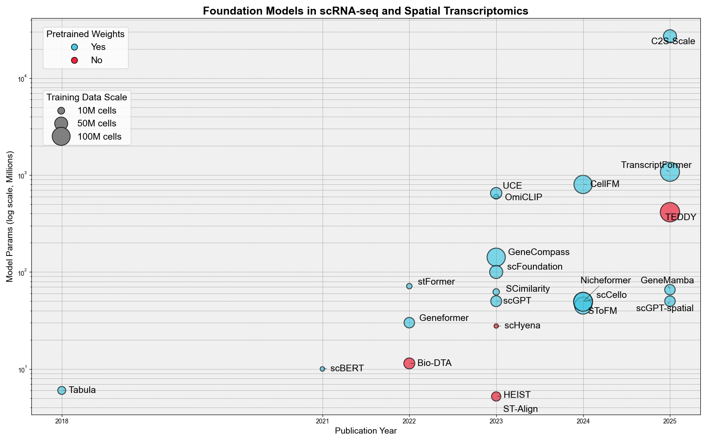

Foundation Models in Transcriptomics
Foundation models represent a paradigm shift in transcriptomics analysis, leveraging large-scale pre-training on diverse cellular datasets to achieve exceptional generalization across different cell types, tissues, and experimental conditions. These models are characterized by their ability to learn universal representations of gene expression from massive datasets containing millions to billions of cells. Our review identifies 24 prominent foundation models spanning from small efficient models (6M parameters) to large-scale models (1.08B parameters).
Foundation Models: Scale Analysis (Model Parameters vs Training Data)
Key Insights: Foundation models in transcriptomics range from 5.2M-parameter HEIST to the 27B-parameter C2S-Scale, illustrating how differently teams trade off model capacity versus deployability. Packaging is improving—19 of 24 models (79%) are pip-installable—yet the training burden still spans from roughly 60 GPU-hours (scFoundation) to 147,456 GPU-hours (CellFM) and training corpora stretch from 0.575M to 116M cells. Roughly 79% of models provide pretrained weights, allowing labs to reuse representations without repeating the most expensive training stages.
Table C: Foundation Models in scRNA-seq and Spatial Transcriptomics
Column Descriptions: Method - Model name | #Params - Model parameters (millions/billions) | Training Data - Scale of training dataset |
GPU Hours - Computational cost for training | GPU Memory - Hardware requirements | Inference Cost - Resource requirements for inference |
Pretrained Weights - Availability of pre-trained models | Installation - Setup method | Code - Repository link
Note: * indicates parameters estimated from model architecture described in publications rather than explicitly stated values.
| Method | #Params | Training Data | GPU Hours | GPU Memory | Pretrained Weights | Installation | Code |
|---|---|---|---|---|---|---|---|
| Nicheformer | 49.3M | 110M cells | 2,880 | 12×A100 (40GB) | Yes | pip | GitHub |
| stFormer | 71.4M* | 4.1M cells | 960 | 4×RTX 3090 (24GB) | Yes | pip | GitHub |
| OmiCLIP | 599M* | 2.2M pairs | — | 1×A100 (80GB) | Yes | pip | GitHub |
| CELLama | 33M | — | — | — | Yes | pip | GitHub |
| ST-Align | — | 1.3M spot-niche pairs | — | 3×A800 (40GB) | No | — | GitHub |
| HEIST | 5.2M* | 22.3M cells | 72 | 4×L40 (48GB) | No | source | GitHub |
| scGPT-spatial | 50M* | 30M cells/spots | — | 4×A100 (80GB) | Yes | pip | GitHub |
| SToFM | 45M* | 88M cells + 2k ST slices | 1,920 | 4×A100 (80GB) | Yes | pip | GitHub |
| scGPT | 50M | 33M cells | — | — | Yes | pip | GitHub |
| scBERT | 10M | 1.1M cells | — | — | Yes | pip | GitHub |
| Geneformer | 30M | 30M cells | 864 | 12×V100 (32GB) | Yes | pip | GitHub |
| GeneCompass | 142M | 101.8M cells | 6,912 | 32×A800 | Yes | pip | GitHub |
| CellFM | 800M | 102M cells | 147,456 | 8×Ascend 910 | Yes | pip | GitHub |
| GeneMamba | 65.7M | 30M cells | 2,016 | 4×A100 (80GB) | Yes | pip | GitHub |
| scHyena | 27.7M | 0.575M cells | 168 | 2×RTX 3090 | — | — | — |
| TranscriptFormer | 1.08B | 112M cells | — | 1000×H100 | Yes | pip | GitHub |
| scCello | 49.3M | 110M cells | 192 | 4×A100 (40GB) | Yes | pip | GitHub |
| Bio-DTA | 11.4M | 33.4M pairs | 672 | 4×A10G (24GB) | No | — | — |
| C2S-Scale | 27B | 50M cells | — | — | Yes | pip | GitHub |
| SCimilarity | 62.3M | 7.9M cells | — | — | Yes | pip | GitHub |
| scFoundation | 100M | 50M cells | 60 | 64×A100 (80GB) | Yes | pip | GitHub |
| TEDDY | 414M | 116M cells | — | — | No | — | — |
| Tabula | 6M | 15M cells | — | — | Yes | pip | GitHub |
| UCE | 650M | 36M cells | 23,040 | X A100 (80GB) | Yes | pip | GitHub |
📊 Foundation Models Summary
- Total Foundation Models Reviewed: 24
- Model Size Range: 5.2M - 27B parameters
- Training Data Range: 0.575M - 116M cells
- GPU Training Hours Range: 60 - 147,456 hours
- Pretrained Weights Available: 79% (19/24 models)
- Installation via pip: 79.2% (19/24 models)
- Key Innovation Areas: Cross-modal learning (OmiCLIP), Language integration (C2S-Scale, TranscriptFormer), Sequence modeling (GeneMamba)